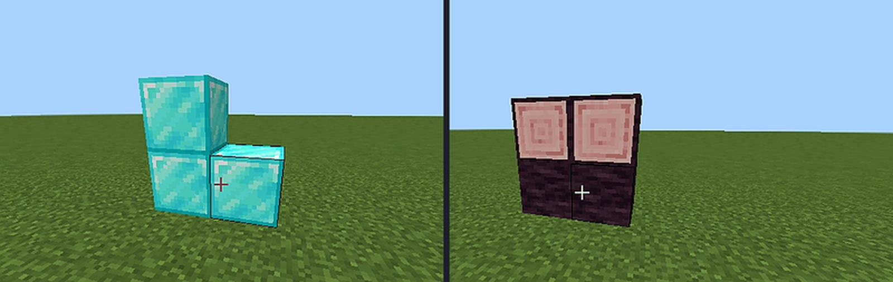

The camouflage engine
Most disguise add-ons swap one texture. Gloamguise rebuilds the whole appearance of the neighbouring block across five independent channels, so a fake wall survives close inspection.
The five channels
| Channel | What is copied | Why it matters |
|---|---|---|
| Textures | Every visible face, including the bottom you cannot see | No seams on a mixed-material wall |
| Axis | X / Y / Z grain of logs, basalt, purpur | A rotated log keeps the bark direction |
| Biome | Grass colour resolved from the current biome | The entrance melts into any landscape |
| Sound | Step and break sounds of the original block | Stone still sounds like stone |
| Light | Light emission of the copied block | A disguised lamp really lights the room |

Faces
Top, bottom and all four sides of multi-face blocks are resolved independently: grass, podzol, mycelium and nylium keep their green top, dirt bottom and unique sides.
Orientation
Bark, cut and pillar direction is preserved on every log, basalt, deepslate, hay and bamboo block. A decoy placed against a sideways log lies sideways too.
Biome tint
Nineteen grass palettes are sampled from the world, so the entrance matches the meadow it stands in — meadow green, swamp olive, badlands dry.
Sound & light
Footsteps and break sounds stay stone-or-wood, and glowing blocks keep their real light level — 3, 10 or 15. A disguised sea lantern still lights the room.
Under the hood
The registry knows 290+ blocks and 411 structural states. Skins are stored as a base-8 index across three permutation states, with axis, face, mode and orientation kept separately:
gg:s0, gg:s1, gg:s2 (base 8)gg:axis, gg:face, gg:orientgg:mode, gg:open, gg:variantWhat each channel really copies
- Textures: top, bottom, and all four sides of multi-face blocks such as grass, podzol, mycelium, and nylium.
- Axis: X / Y / Z grain for logs, basalt, deepslate, hay, bamboo, and purpur.
- Biome: grass colour resolved from the current biome; nineteen palettes are sampled from the world.
- Sound: step and break sounds stay stone-or-wood, matching the original block.
- Light: glowing blocks keep light level 3, 10, or 15, so a disguised lamp still lights the room.